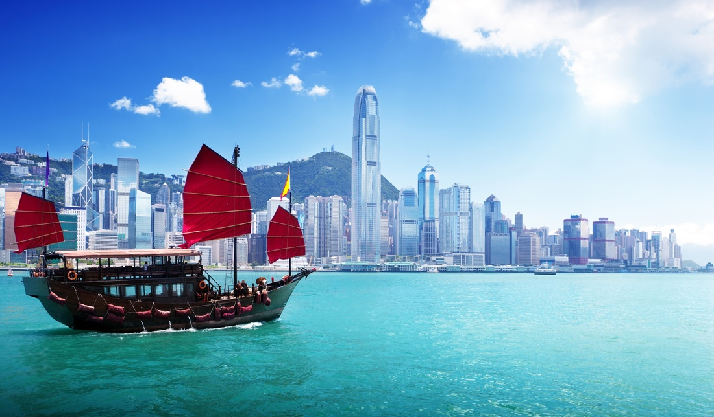
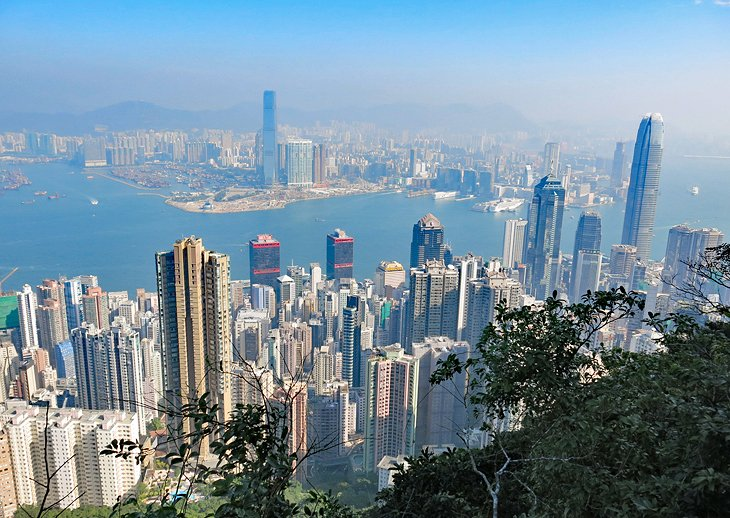

|  |
Hong Kong is perhaps one of those most fascinating regions on the planet for so many reasons and on so many levels. Let’s consider its history and being at the forefront of east meets west, its vibrant and unique local culture, the adoption and fusion of British culture, the adoption of western values and beliefs whilst having a parent nation that is diametrically opposed to such.
Then, look out into the future. The slow process of Hong Kong merging back into mainland China would mostly appear to be well underway perhaps marked by the opening of the XRL line from mainland China into Hong Kong that will enable fast passenger flows between the regions and the overall plan for the Greater Bay Area. It’s a very interesting time. Politics aside, Hong Kong is one the most visited destinations in Asia. |
||||||||
| It’s a city that welcomes visitors from all nations, many of whom have migrated here, and offers a cosmopolitan destination with a very rich and well-loved local culture that emphasizes family, modesty, and food. While HK’ers share Cantonese culture with their southern mainland counterparts throughout Guangdong Province, they have also developed very a very distinct, and uniquely Hong Kong Cantonese culture. Staying on the topic of Mainland and Hong Kong, the official languages of the city are English and Chinese, yet it gets quite complicated as I’ll explain. The most commonly spoken Chinese dialect is Cantonese which is shared with its neighbors in Guangdong Province while the official language for mainland China is Standard Mandarin and the two are unintelligible to each other. Furthermore, some Cantonese speakers from mainland China will have some trouble understanding spoken Cantonese of a Hong Kong native due to dialect variances. Written Chinese in Hong Kong flips and flops between Simple Chinese and Written Cantonese. |  |
Welcome to the cosmopolitan city of Hong Kong! Your Hong Kong and Macau tour package itinerary begins.
Land in the dazzling city of Hong Kong. A representative will receive you at the airport and escort you the hotel. Check-in and relax for a while to destress after a long flight.
Spend the first day of your Hong Kong holiday at leisure. You can go out and stroll on the streets. As the day ends, come back to the hotel and sleep off the night.
Kick start the day with a delicious breakfast and get ready for Hong Kong city tour. The first attraction on your Hong Kong trip itinerary will be the Victoria Peak from where you can enjoy the panoramic views of the city.
The next hotspot is the old-fashioned Aberdeen Fishing Village.
Watch the contrasting picture of the traditional houseboats and on the other side, the ultra-modern yachts standing by the harbour.
Later, buy beautiful precious jewellery from the jewel shops and return to your hotel for a comfortable overnight stay, marking the end of the day 2 of your Hong Kong and Macau tour.
A buffet spread of delectable dishes marks a beginning to the third day of your holiday in Hong Kong.
Get ready for a full-day tour of Disneyland. Catch the front row and watch the parade of all the Disney characters dancing in full force to the tune of Disney songs. For some adventurous fun, indulge in the joyful rides or go hunting by opting for a jungle river cruise.
Start the day with a fresh breakfast and get ready for an exciting full day tour of Ocean park. Home to over 400 species of fishes, the Grand Aquarium gives you an opportunity to walk through the artificial bubble tunnels and reefs with a see-through glass bottom to view the colorful fishes swimming beneath.
The highlight of your Hong Kong travel would be watching the first ever 360-degree water screen show, Symbio, complemented with fireworks and music.
śAfter an awesome day, come back to the hotel and stay for the night.
Savour a hearty breakfast, complete check-out formalities and leave for the sizzling city of Macau. Enjoy the joyful ferry ride as you go past the Hong Kong skyline and reach the shores of Macau.
Upon reaching, check-in at the hotel and relax for some time.
You have this entire day to explore the scintillating city. While on your Macau trip, street shopping is a must.
After a fun-filled day, come back to the hotel and have a sound sleep.
After a delectable breakfast, check-out from the hotel in Macau and get transferred to Hong Kong by ferry.
Upon reaching Hong Kong, you will be transferred to the International Airport to board the flight for your onward destination.
Meals which don't find their mention in the package are not included in the package.
Other personal expenses, entrance tickets, and hotel taxes (if any) will have to be borne by the travellers.